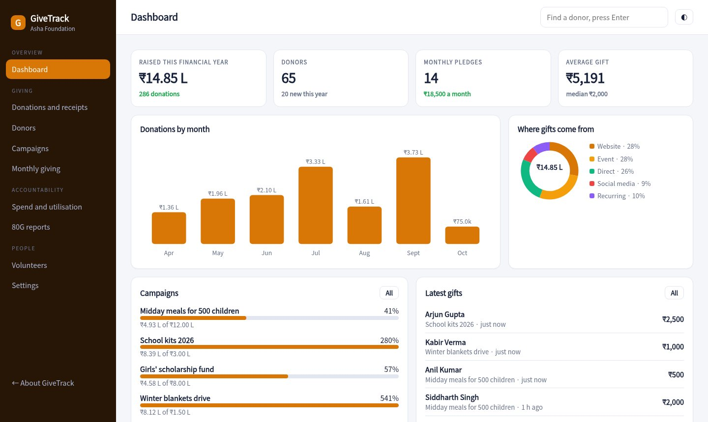
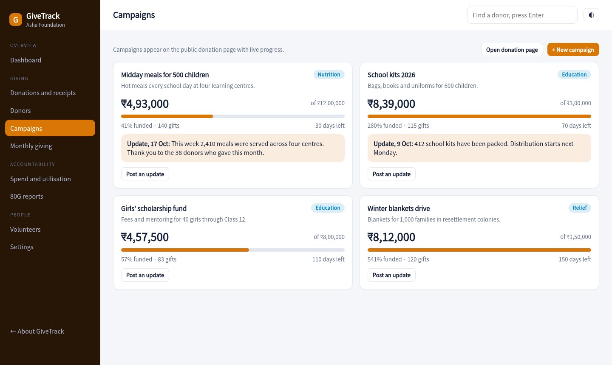
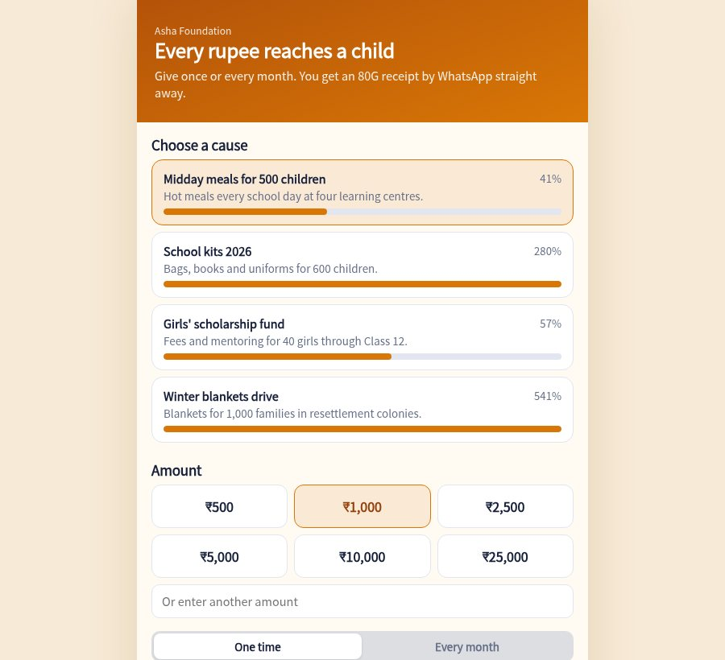

A donation page you can share on WhatsApp, 80G receipts issued instantly, a record of every donor and a clear view of how much reaches your programmes.

Donors pick a cause, an amount and one-time or monthly, and pay by UPI. Progress bars show how funded each campaign is.
Every gift gets a numbered receipt with your 80G and 12A details, the amount in words and a PAN line. Print it or send it on WhatsApp.
Lifetime giving, last gift, monthly donors, major donors and lapsed donors. Add notes and thank them in one tap.
Set goals and end dates and post updates. Donors see where their money went.
Track pledges, see who paused, and nudge them with a UPI link. Monthly donors are the most stable income you have.
See what share goes to programmes, administration and fundraising. Download the donor-wise statement with PAN and totals.
Raised this financial year, new donors, monthly pledges and each campaign against its goal.
Goals, progress and updates for each cause, mirrored on the public donation page.

Clean, quick, and built for phones. Donors get their receipt as soon as they have paid.

Enter registration, PAN, 80G and 12A numbers and your UPI ID. Receipts use them.
Create causes with goals and share the donation page link.
Issue receipts, thank donors, and download the donor statement at year end.
Sample pricing for this concept build.
The receipt carries your registration details, the donor's PAN, the amount in words and the standard statement. Check the format with your CA before using it for real.
Donors pay by UPI from the donation page. A production build can add a payment gateway with cards and automatic reconciliation.
Yes. Monthly donors are tracked with their day of the month and can be paused and nudged.
No. Donors, gifts and campaigns are generated for a made-up foundation.
Open the donation page, give a sample gift and see the 80G receipt appear.
Open the NGO console